Installing Python and PyCharm
In order to user Python with PyCharm, you will first have to install both piece of software. Although you will be using them in tandem, Python and Pycharm are separate pieces of software made by separate organisations. As such, they will need to be installed separately.
COMP-1510 requires using specific installation options which are easily missed. As such, this page will cover how to properly install Python and PyCharm the first time.
The screenshots in this document will show the installers for Windows. The UI will be slightly different on other operating systems, but the overall process will be the same.
Installing Python
Most Linux distributions should already come with an upto date Python interpreter, but Windows doesn't have one by default and Mac come packaged an outdated version.
-
Go to the official Python download page on the computer you want to install Python to.
-
The website should automatically detect your operating system and change the main download button to the correct version of the installer. If the auto detection is not correct, click one of the options below to manually select the version. 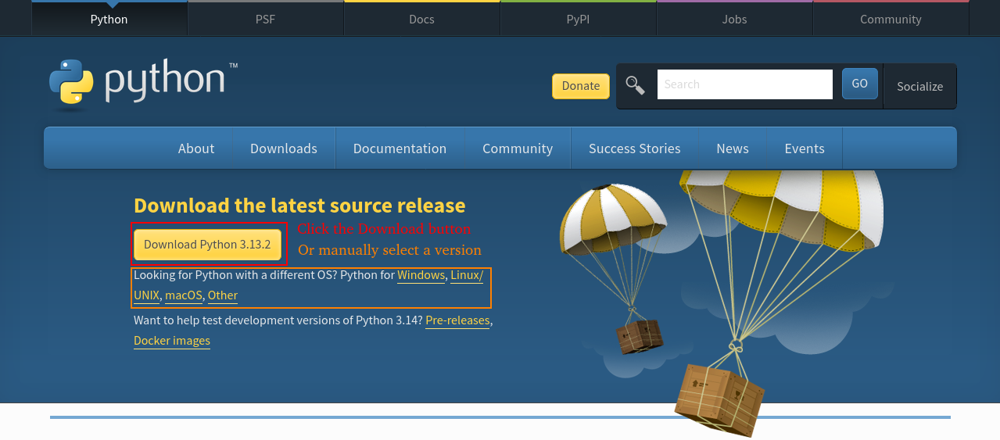
-
Go to the folder where the file was downloaded to and click on it to begin installation.
-
Check the box labelled
Add python to PATH, to make Python more easily accessible on your terminal, and then clickInstall Now. 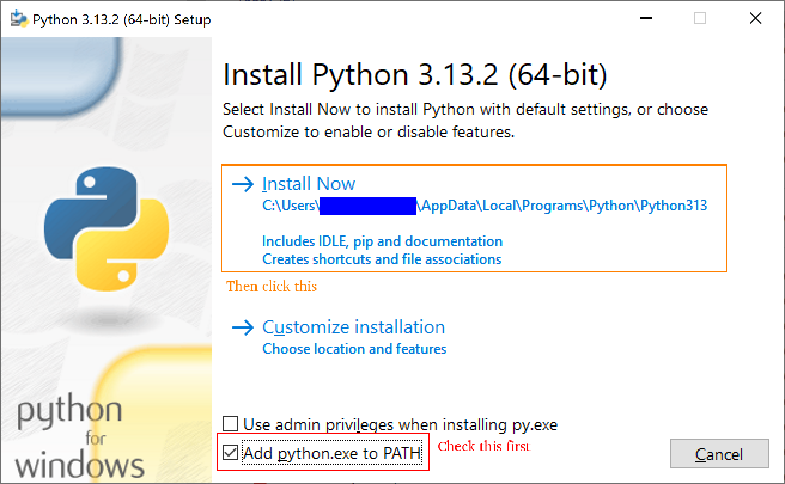 -
Wait for the installer to finish. 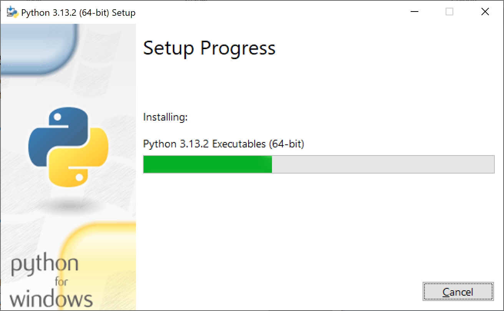
-
Click
Closewhen the installation is complete. 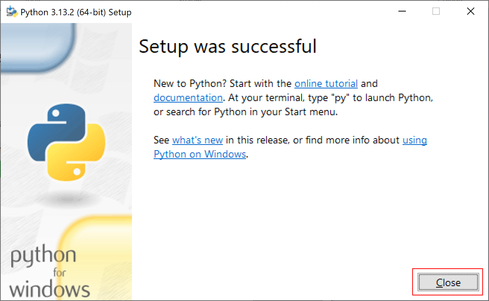
Installing PyCharm
One mistake students often make when installing PyCharm is selecting the wrong version. In COMP-1510, students should use PyCharm Professional, not PyCharm Community. PyCharm Professional requires a license to use, which BCIT students receive for free.
-
Go to the PyCharm download page on the computer you want to install PyCharm to.
-
PyCharm Professional supports Windows, Mac, and Linux, and the website should automatically detect your operating system. If it is incorrect, click on the correct one from the choices just below the header.
-
The website should also automatically detect the architecture of your computer and select the correct version of the installer, but if it is incorrect, click the dropdown beside the
Downloadbutton and select the correct version. 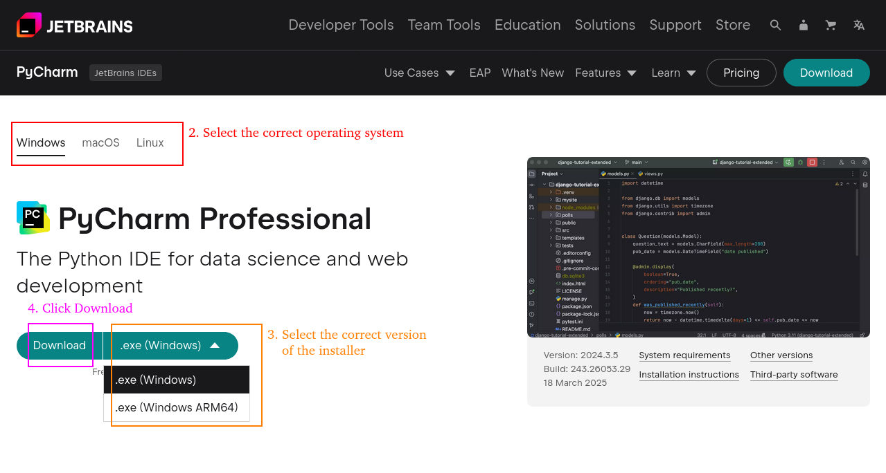 -
Click the
Downloadbutton to download the installer. -
Go to the folder where the file was downloaded to and click on it to begin installation. It's a large file so it's normal for it to take a few seconds to load.
-
Click next for the next two screens. 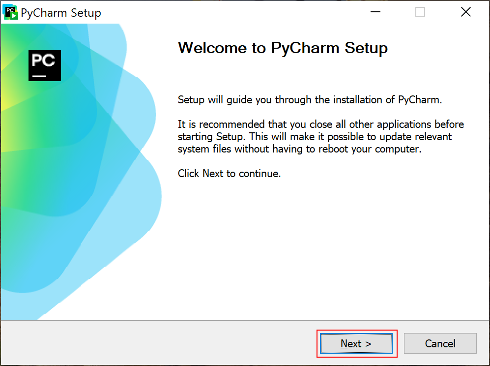 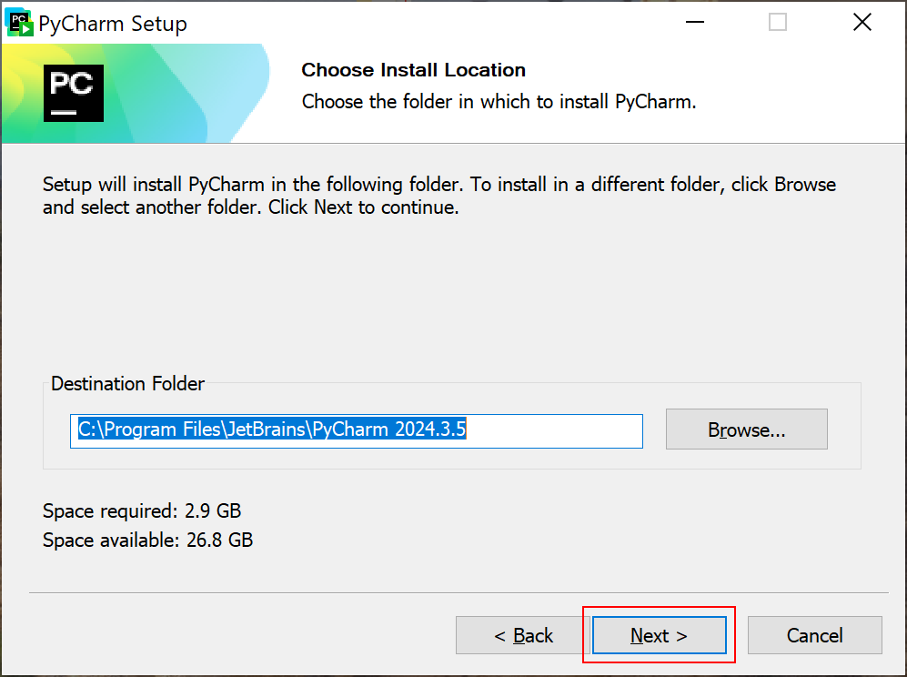
-
It is recommended to check the boxes for
Open folder as projectandAssociate .py files, as these will allow for quicker access to PyCharm. Then click next. 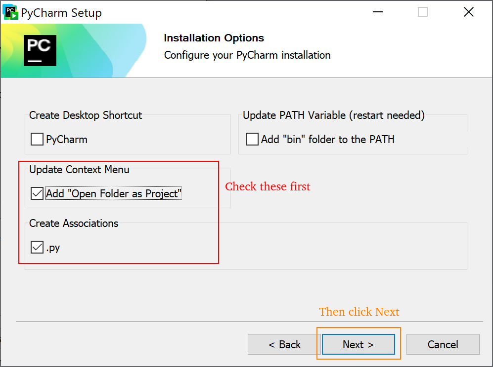 -
Click install.

-
Wait for the installation to complete. 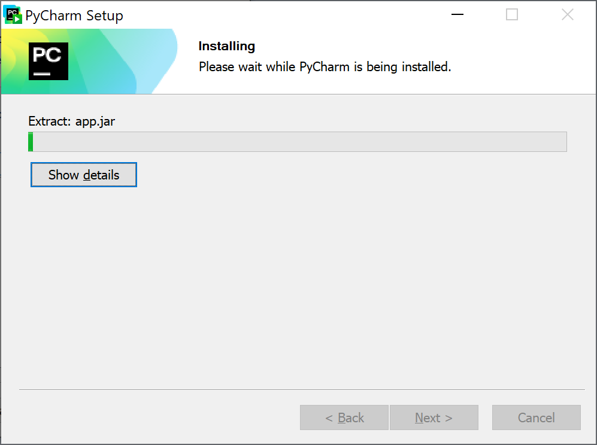
-
Check the box labelled
Run PyCharmand then clickFinish. The newly installed PyCharm will open. 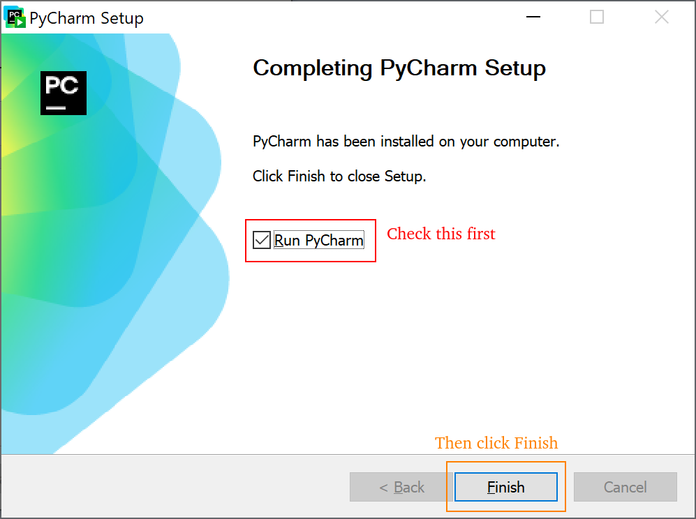 -
Check the box for agreeing to the user agreement and click
Continue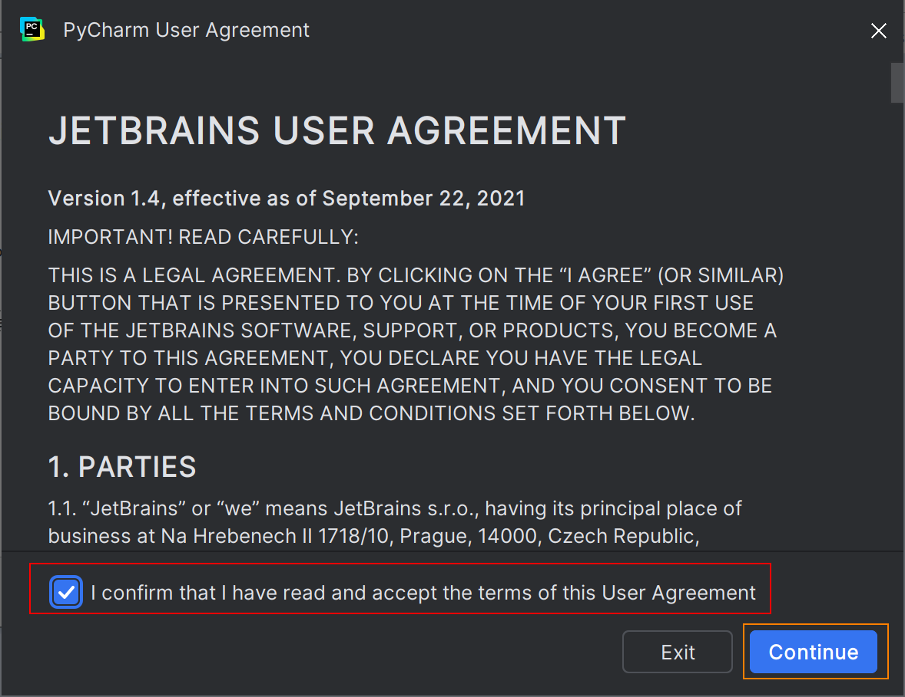 -
Choose whether to send usage statistics to Intellij. 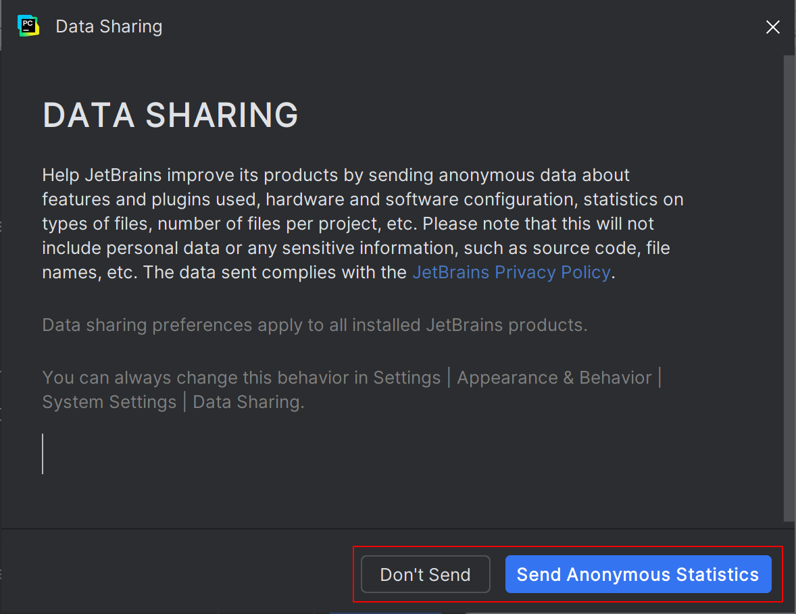
-
Click
Free 30-Day Trialfor now, we will activate the license in the Configuration section. 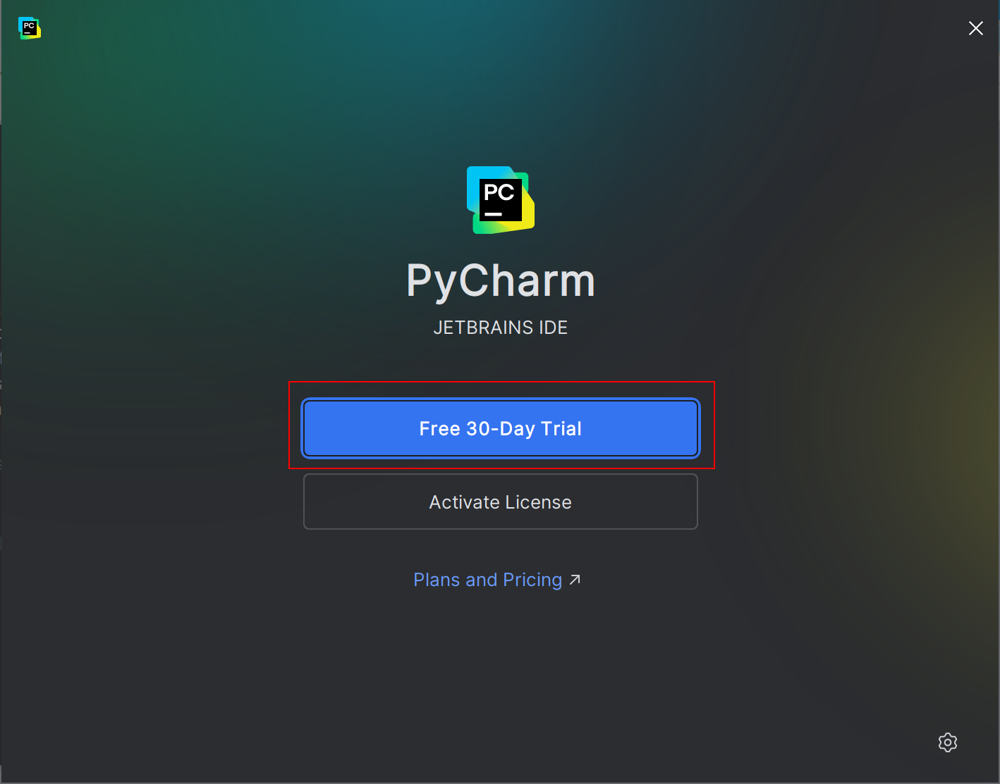 -
If the installation was successful, you should see this landing screen: 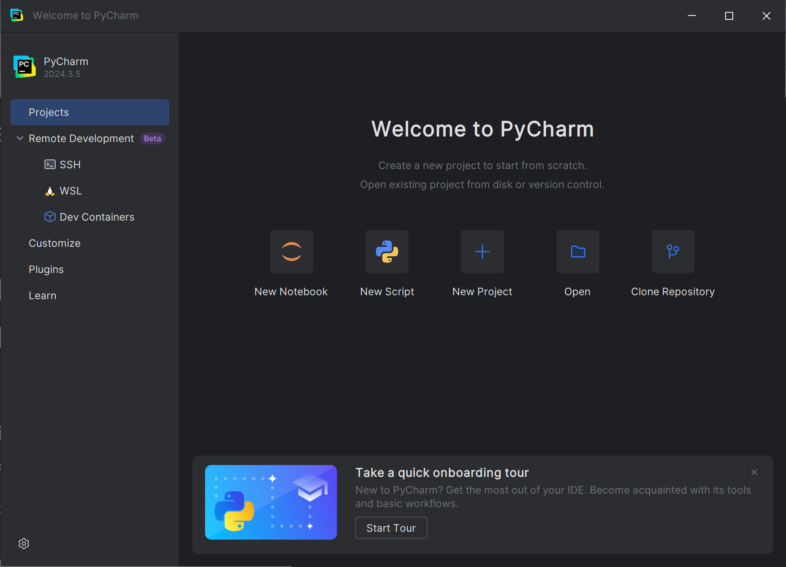
Next Steps
If you have followed these steps successfully, the PyCharm IDE should already be open in front of you. Proceed to Configuration to set up the IDE for use in COMP-1510.